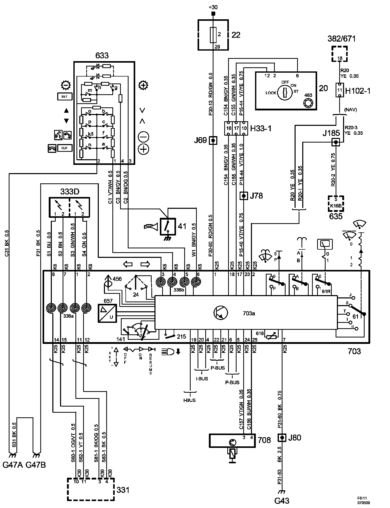
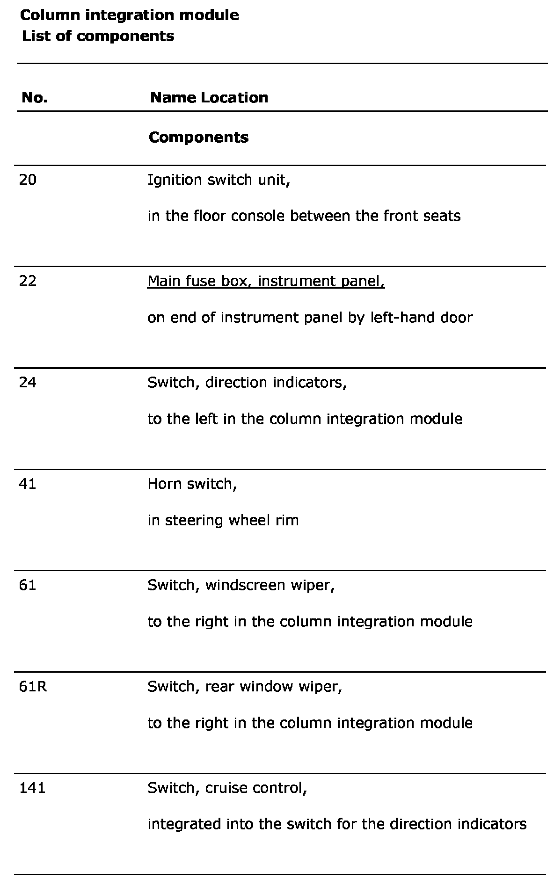
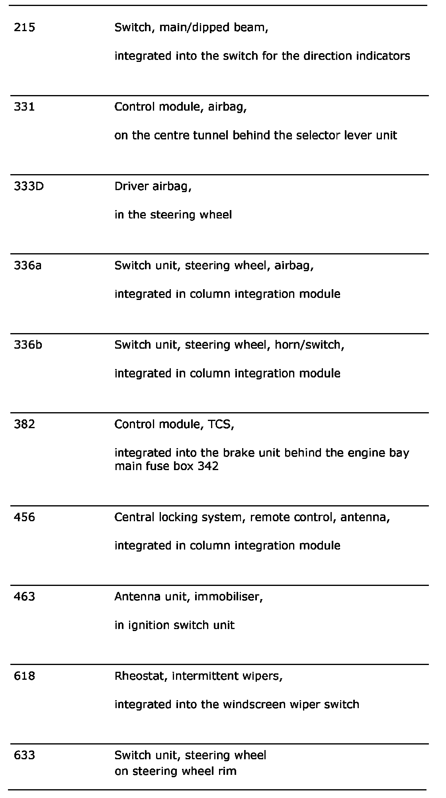
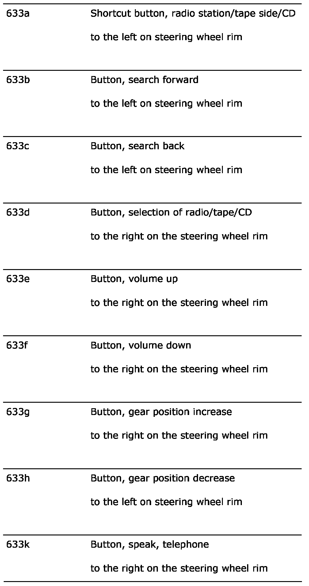
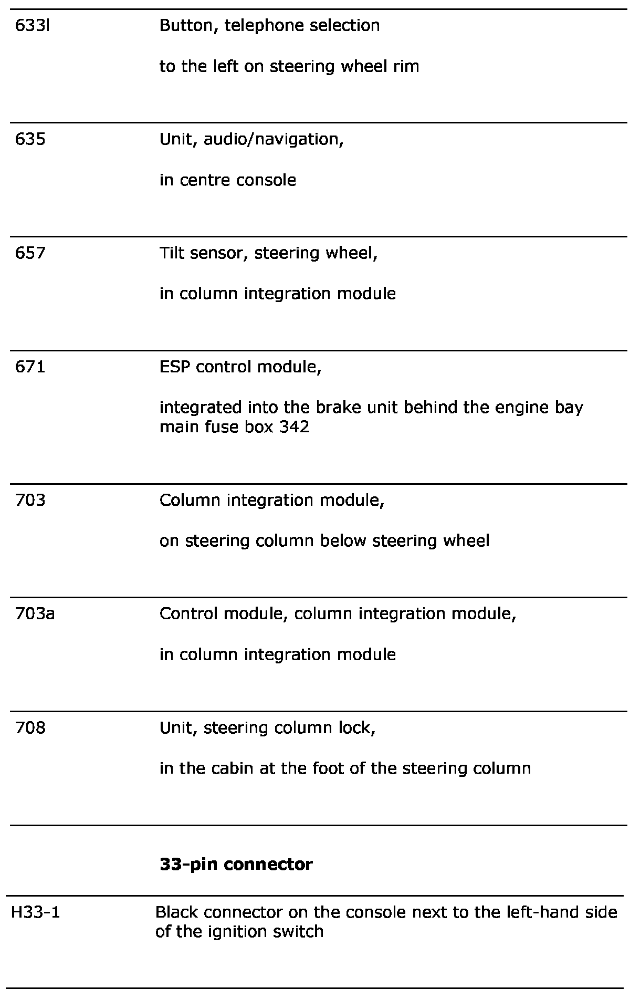
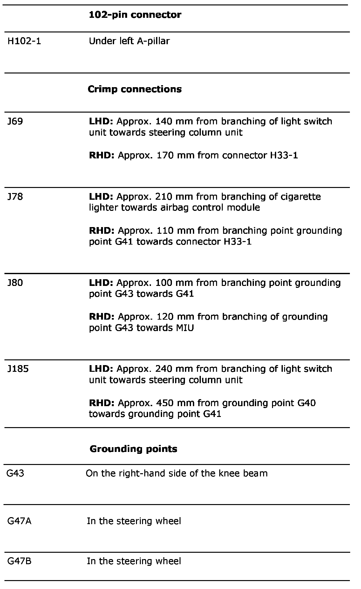

Electrical Diagrams






Power Supply Diagrams: The diagrams for the power supplies that may be feeding this system (+30, +15, +54, +X, and +B) ) can be found at Power and Ground Distribution diagrams. Electrical Diagrams